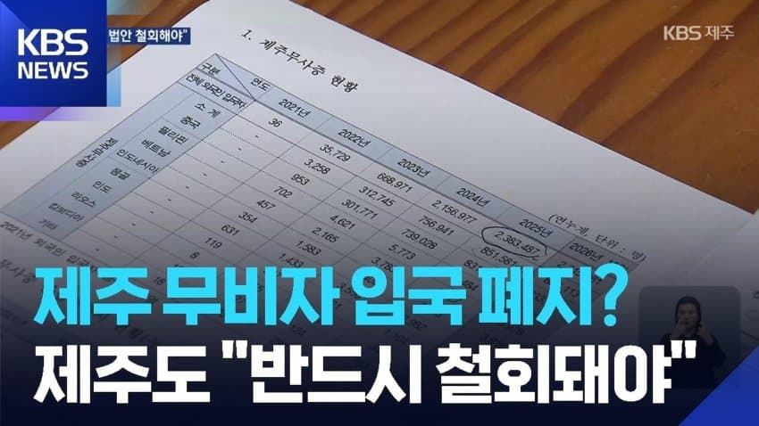
외국인 무사증 입국 제도를 전면 폐지하는 법안이 국회에 제출되었다고 함
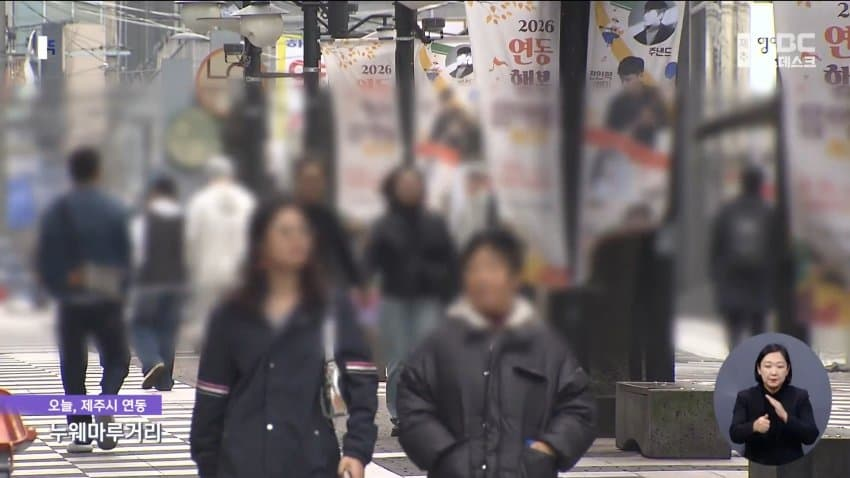
외국인 관광객들이 주로 방문하는 제주시 연동의 거리
외국어로 쓴 간판들이 늘어서 있고,
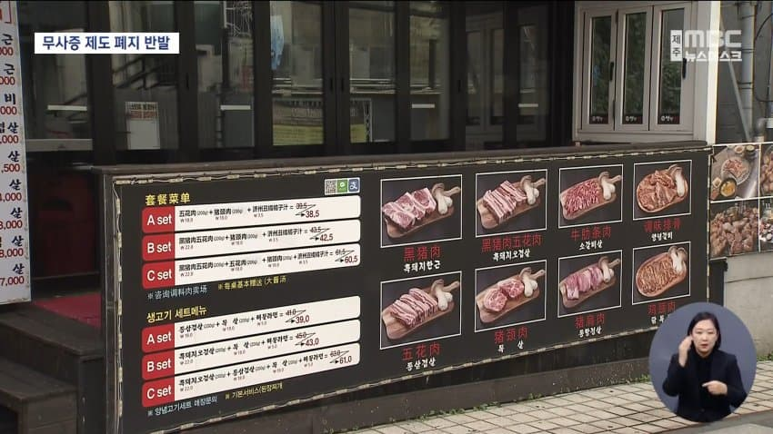
음식 메뉴판에도 한글과 외국어가 같이 적혀 있음
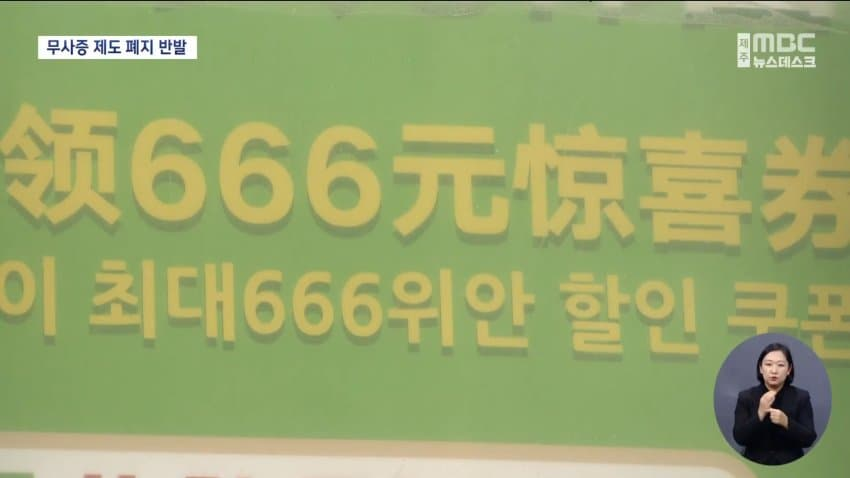
외국인 관광객들에게는 할인쿠폰도 나눠주고 있음
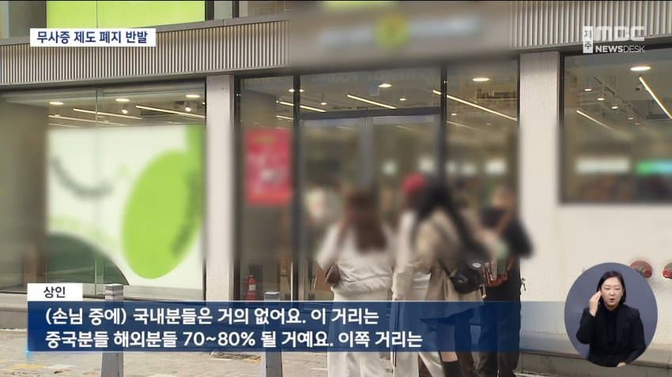
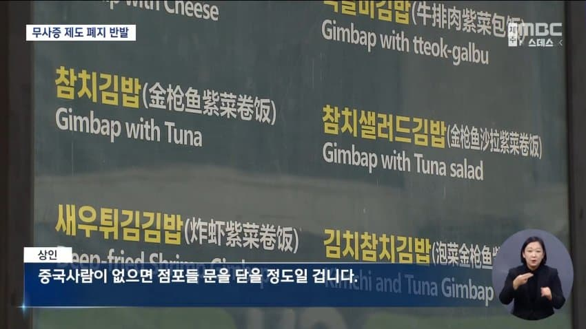
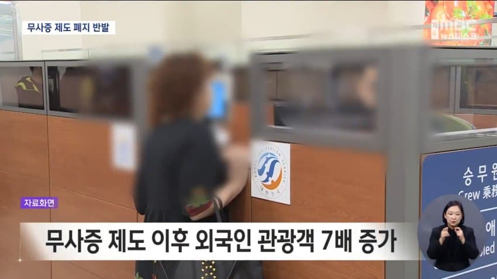
전국에서 유일하게 제주에 무사증 제도가 도입된 것은 지난 2002년
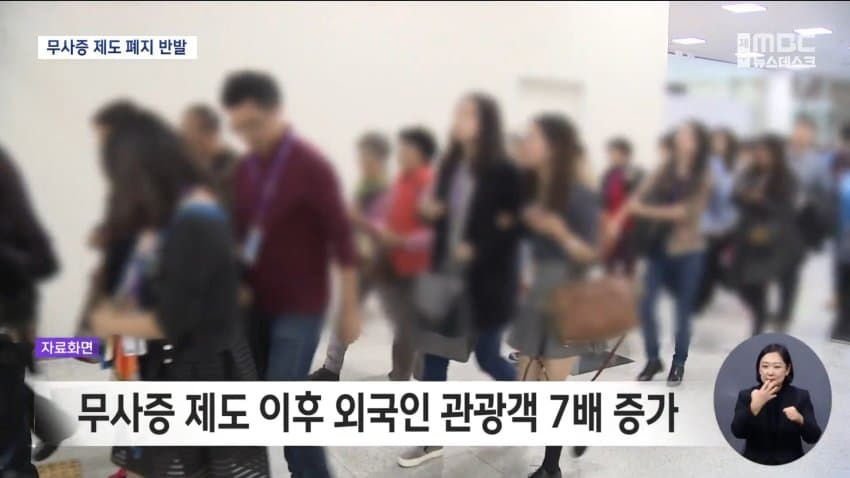
이후 24년 동안 외국인 관광객은 7배 넘게 늘었음
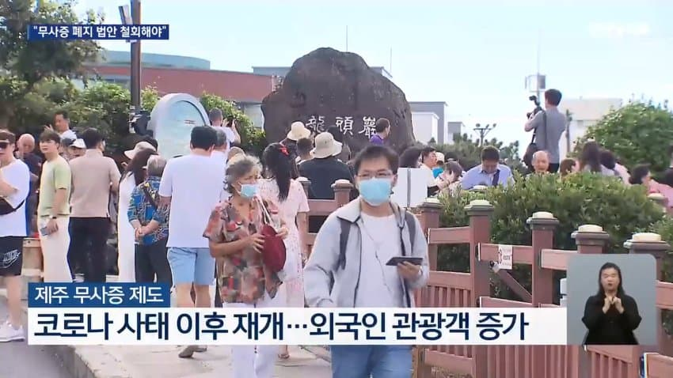
제주 무사증 제도는 코로나19 사태로 일시 중단됐다 2년 4개월 만에 재개되기도 했는데
외국인 관광객도 다시 늘어 지난해 200만 명을 돌파할 정도라고 함
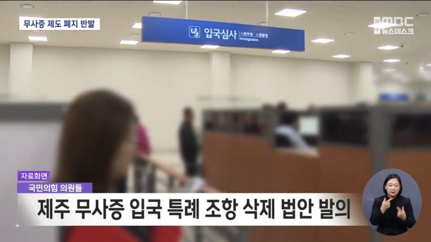
그런데 최근 국민의힘 송언석 의원이 같은 당 의원 9명과 함께
외국인의 제주 무사증 입국 특례 조항을 삭제하는 제주특별법 개정안을 대표 발의해 제주 내에서 논란이 되고 있음
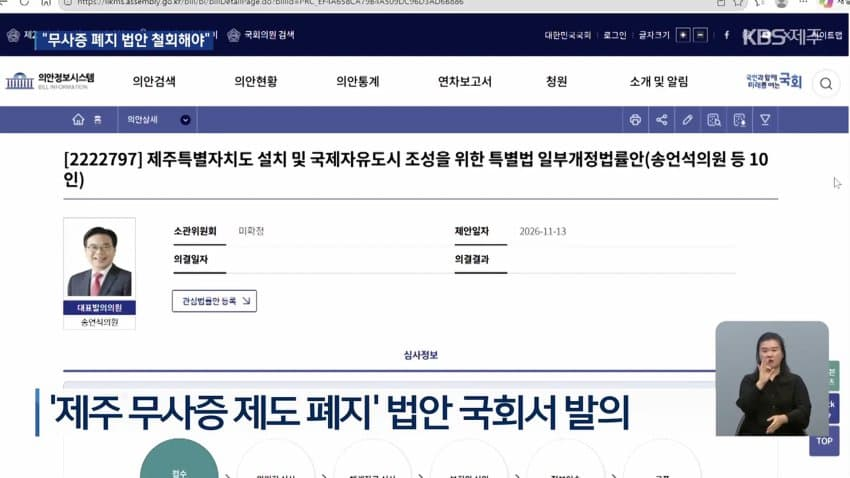
법안 내용을 살펴보면
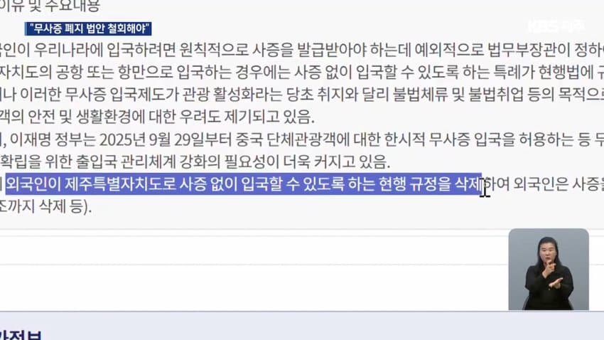
외국인이 제주특별자치도로 사증 없이 입국할 수 있도록 하는 현행 규정을 삭제한다는데
송언석 의원은 그 취지를 위와 같이 밝힘
외국인 무비자 입국 제도의 부작용으로 국민의 안전과 평온한 일상이 위협받고 있다는 주장, 과연 사실일까?
당연하게도 사실임
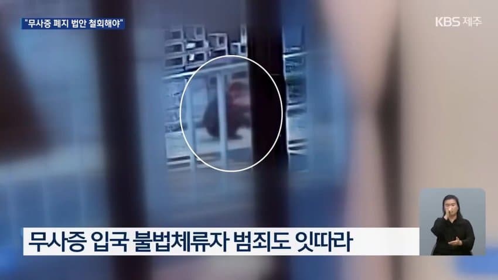
흉기 난동에 경찰과의 추격전까지….
잇따라 사건에 연루된 이들은 대부분 무사증으로 입국한 중국인 불법체류자들임
여기에 법무부가 지난달 3주 동안 제주에서 적발한 불법체류자만 2백 명이 넘음
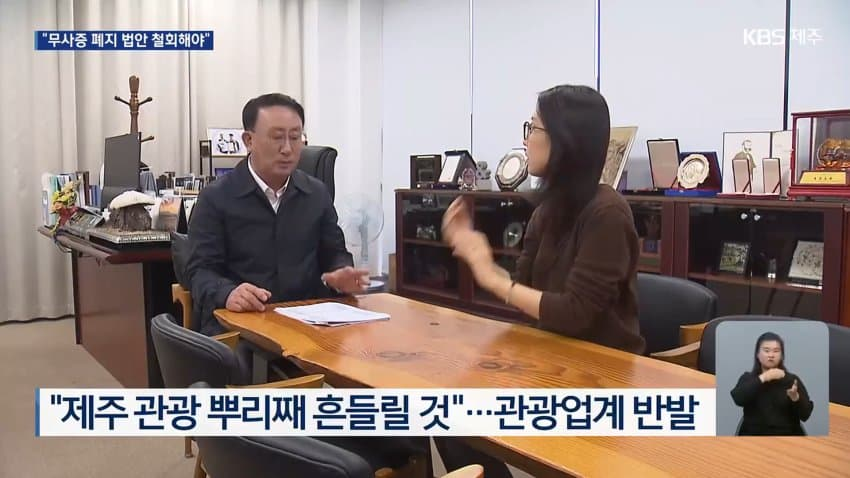
그런데도 제주 관광업계는 즉각 반발에 나섰음
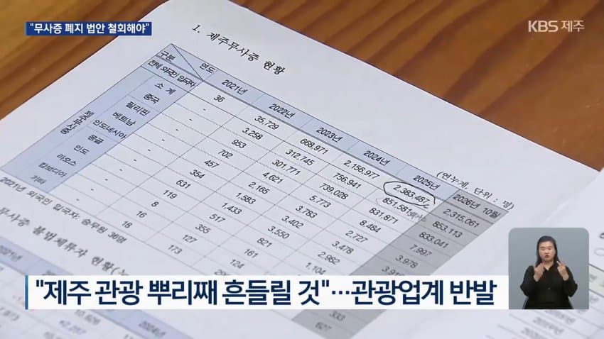
지난해 도내 외국인 범죄 피의자가 전국의 2% 수준에 불과한 데다, 외국인 관광객의 중요성이 갈수록 커지고 있다는 것
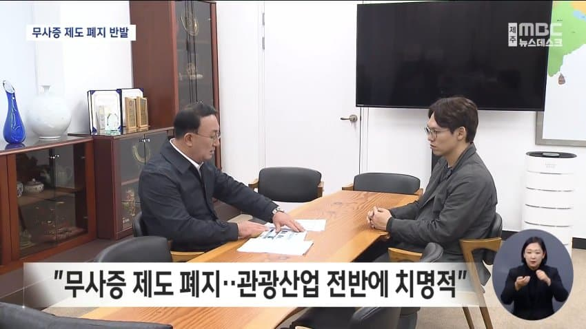
코로나19 이후 외국인 관광객이 해마다 증가하는데
무사증 제도가 폐지되면 항공과 숙박, 크루즈 등 관광산업 전반에 치명적인 타격이 불가피하다는 게 그들의 주장임
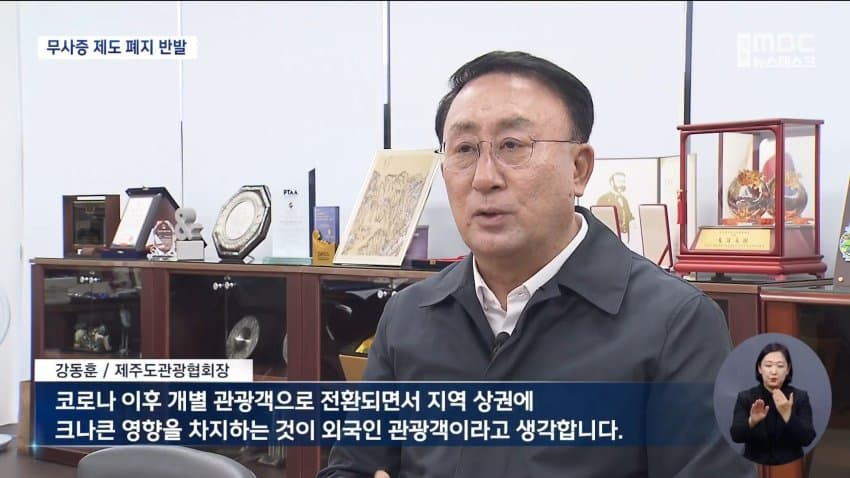
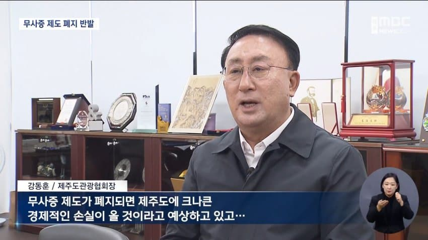
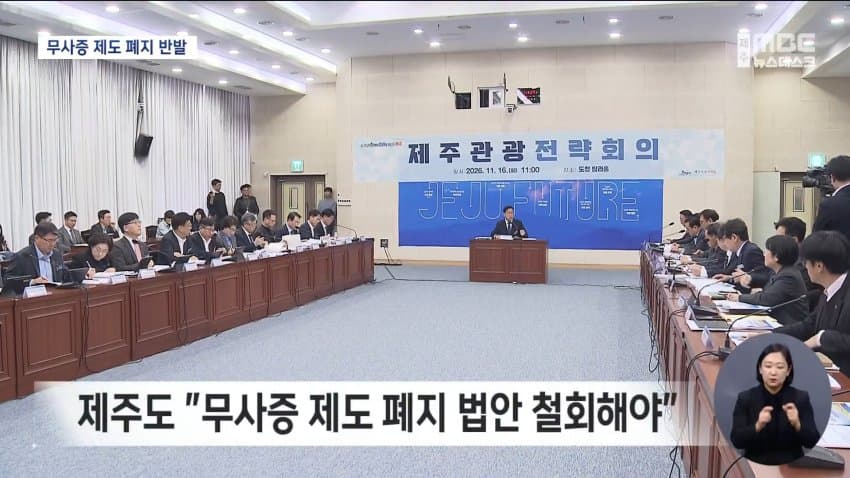
제주도 측도 대응 수위를 높이며 법안 철회를 강도높게 압박하고 있는 상황
위성곤 제주 지사는 "무사증이 지역경제 활성화에 핵심적인 역할을 해 왔다"며 "해당 법안은 반드시 철회돼야 한다"고 강조함
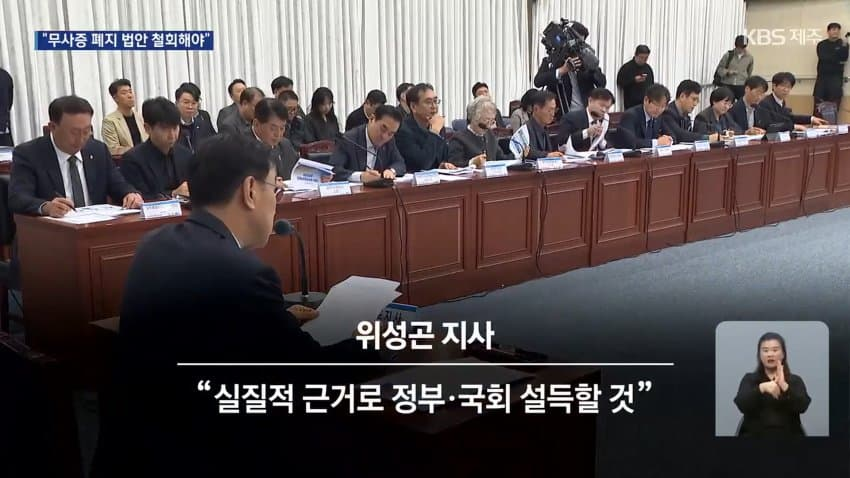
그러면서 "실질적인 근거를 바탕으로 정부와 국회를 설득하겠다"고도 말함
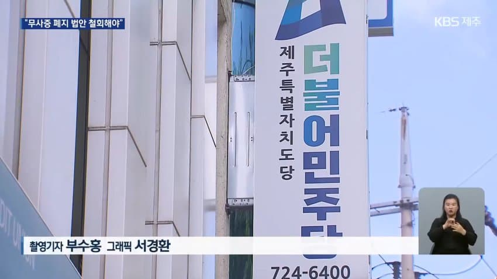
더불어민주당 제주도당 역시 성명을 내고, 무사증 제도는 외국인 관광객 유치와 국제교류 확대를 뒷밤침해 온 특례제주국제자유도시의 출발점이자 핵심 특례라며 법안 철회를 촉구했음
돈 좀 벌겠다고, 표 좀 받겠다고 제 이익만 챙기느라 국가와 민족에 큰 죄를 짓겠다는 자들의 말을 들어줄 필요는 없음
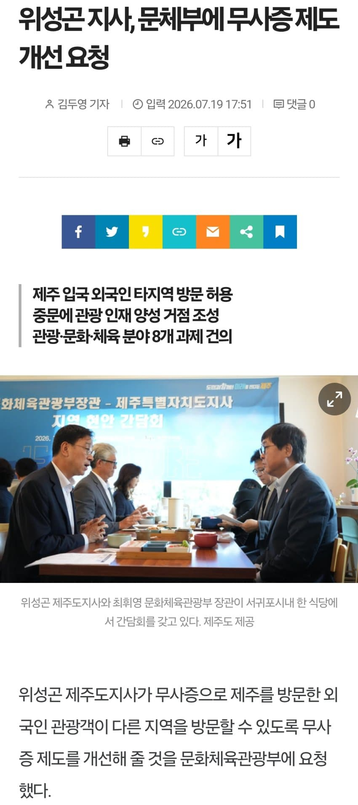
무사증 입국 외국인이 아예 대한민국 본토로 이동할 수 있게까지 하려했던 인물이 위성곤이라는 걸 대만갤 이용층이라면 이미 잘 알고 있을 거임
이런 몇몇 인물들이 대한민국의 안전을 해치지 못하게 하기 위해서라도 무사증 폐지에서 그치지 말고 제주도를 비롯한 전국 특별자치도들을 전부 폐지하는 것까지 나아가야 함
너무 많은 자치권을 주는 바람에 지자체들이 폭주하며 다문화, 불체자, 난민의 온상이 되어가고 있음
반드시 막아야 함
- dc official App
댓글
수집 당시 댓글 138개
. · 11.19 08:02:49
· ㅇㅇ · 11.19 10:33:50
ㅇㅇ · 11.19 08:08:54
ㅇㅇ · 11.19 08:12:17
2456778 · 11.19 08:14:23
ㅇㅇ · 11.19 08:14:32
ㅇㅇ · 11.19 08:19:37
· ㅇㅇ · 11.19 08:27:12
· ㅇㅇ · 11.19 08:28:07
· ㅇㅇ · 11.19 08:28:50
· ㅇㅇ · 11.19 09:59:40
· ㅇㅇ · 11.19 10:32:27
· ㅇㅇ · 11.19 10:33:07
· ㅇㅇ · 11.19 10:34:07
· ㅇㅇ · 11.19 10:37:43
· ㅇㅇ · 11.19 10:38:40
· ㅇㅇ · 11.19 10:40:10
· ㅇㅇ · 11.19 10:41:06
· ㅇㅇ · 11.19 10:42:40
· ㅇㅇ · 11.19 10:43:42
· ㅇㅇ · 11.19 10:45:08
· ㅇㅇ · 11.19 10:46:45
· ㅇㅇ · 11.19 10:49:45
· ㅇㅇ · 11.19 10:50:32
· ㅇㅇ · 11.19 10:50:44
· ㅇㅇ · 11.19 10:51:07
· ㅇㅇ · 11.19 10:51:12
· ㅇㅇ · 11.19 10:52:11
· ㅇㅇ · 11.19 10:52:39
· ㅇㅇ · 11.19 10:53:40
· ㅇㅇ · 11.19 10:53:56
· ㅇㅇ · 11.19 10:54:33
· ㅇㅇ · 11.19 10:55:18
· ㅇㅇ · 11.19 10:59:11
· ㅇㅇ · 11.19 11:04:26
· ㅇㅇ · 11.19 11:25:35
ㅇㅇ · 11.19 08:23:59
ㅇㅇ · 11.19 08:30:30
ㅁㄴㅇㄻㄴㄹㅇ · 11.19 08:30:33
ㅁㄴㅇㄻㄴㄹㅇ · 11.19 08:31:37
ㅇㅇ · 11.19 08:33:35
ㅅㅂ · 11.19 08:52:49
ㅇㅇ · 11.19 08:52:49
ㅇㅇ · 11.19 08:55:41
ㅇㅇ · 11.19 08:55:57
· ㅇㅇ · 11.19 10:30:51
· ㅇㅇ · 11.19 11:18:49
씹덕1020일차 · 11.19 08:59:33
ㅇㅇ · 11.19 09:00:51
ㅇㅇ · 11.19 09:02:33
ㅇㅇ · 11.19 09:04:24
대 재 명
여갤러 · 11.19 09:10:55
ooooodo · 11.19 09:12:20
ㅇㅇ · 11.19 09:14:11
ㅇㅇ · 11.19 09:15:12
· ㅇㅇ · 11.19 09:44:37
· ㅇㅇ · 11.19 09:45:08
· ㅇㅇ · 11.19 10:12:32
oo · 11.19 09:21:04
ㅇㅇ · 11.19 09:29:29
ㅇㅇ · 11.19 09:32:41
hawaii50 · 11.19 09:35:22
ㅇㅇ · 11.19 09:38:43
ㅇㅇ · 11.19 09:44:59
VWVWV · 11.19 09:48:40
타이밍뒷통수한방 · 11.19 09:50:05
ㅇㅇ · 11.19 09:51:56
ㅇㅇ · 11.19 10:04:25
ㅇㅇ · 11.19 10:30:12
· ㅇㅇ · 11.19 10:34:07
· ㅇㅇ · 11.19 10:35:58
· ㅇㅇ · 11.19 10:36:42
· ㅇㅇ · 11.19 10:37:52
· ㅇㅇ · 11.19 10:38:37
· ㅇㅇ · 11.19 10:38:38
· ㅇㅇ · 11.19 10:42:59
· ㅇㅇ · 11.19 10:56:44
· ㅇㅇ · 11.19 10:59:45
· ㅇㅇ · 11.19 11:00:10
· ㅇㅇ · 11.19 11:00:24
· ㅇㅇ · 11.19 11:01:09
· ㅇㅇ · 11.19 11:01:27
· ㅇㅇ · 11.19 11:02:14
· ㅇㅇ · 11.19 11:02:25
· ㅇㅇ · 11.19 11:02:30
· ㅇㅇ · 11.19 11:02:50
· ㅇㅇ · 11.19 11:23:33
· dd · 11.19 11:51:44
ㅇㅇ · 11.19 10:57:40
ㅇㅇ · 11.19 10:57:46
ㅇㅇ · 11.19 10:57:53
ㅇㅇ · 11.19 10:57:59
ㅇㅇ · 11.19 10:58:02
ㅇㅇ · 11.19 10:58:06
ㅇㅇ · 11.19 11:04:20
ㅇㅇ · 11.19 11:17:56
ㅇㅇ · 11.19 11:33:16
ㅇㅇ · 11.19 11:39:50
마코토리 · 11.19 11:53:19
· ㅇㅇ · 11.19 12:11:29
ㅇㅇ · 11.17 21:53:41
· ㅇㅇ · 11.19 08:06:55
· ㅇㅇ · 11.19 09:43:43
· ㅇㅇ · 11.19 09:47:10
· ㅇㅇ · 11.19 09:58:25
물리남 · 11.17 22:06:28
· 서북삼걸최강몽양총통 · 11.17 22:23:25
서북삼걸최강몽양총통 · 11.17 22:21:11
서북삼걸최강몽양총통 · 11.17 22:22:22
우리겨레2 · 11.17 22:58:01
ㅇㅇ · 11.18 05:00:31
말랑보추 · 11.19 07:41:41
ㅇㅇ · 11.19 07:42:16
· 소설쟁이 · 11.19 07:48:31
· 소설쟁이 · 11.19 07:48:51
· 소설쟁이 · 11.19 07:49:26
나너나 · 11.19 07:44:08
ㅇㅇ · 11.19 07:46:52
ㅇㅇ · 11.19 07:46:55
· ㅇㅇ · 11.19 08:09:17
ㅇㅇ · 11.19 07:48:00
· 소설쟁이 · 11.19 07:50:01
ㅇㅇ · 11.19 07:49:37
ㅇㅇ · 11.19 07:51:18
메시이재명맨유롯데 · 11.19 07:51:27
· oo · 11.19 07:55:29
· ㅇㅇ · 11.19 08:08:04
· ㅇㅇ · 11.19 08:09:30
· ㅇㅇ · 11.19 08:56:29
· ㅇㅇ · 11.19 10:34:51
· ㅇㅇ · 11.19 10:58:42
· ㅇㅇ · 11.19 10:59:30
ㅇㅇ · 11.19 07:53:25
· ㅇㅇ · 11.19 09:59:21
· ㅇㅇ · 11.19 10:34:20
· ㅇㅇ · 11.19 11:06:13
ㅇㅇ · 11.19 07:59:24
ㅇㅇ · 11.19 08:01:31